젯슨 작업, 이제 앱 하나로 끝내세요
PuTTY, WinSCP, VS Code 원격, jtop… 젯슨 하나에 쓰던 도구들을 한곳에 모았어요.
기기에 깔 게 없어요
SSH만 켜져 있으면 바로 연결 (JetPack 기본 상태도 OK). VS Code 원격처럼 기기에 서버를 설치하지 않아요.
창을 오갈 필요가 없어요
왼쪽에서 파일 열고, 아래에서 명령 실행, 오른쪽에서 CPU·GPU·온도 확인. 끊기면 자동으로 다시 연결돼요.
AI에게 맡길 수 있어요
Claude·Cursor 같은 AI가 기기에서 명령을 실행하고 파일을 고쳐요. 위험한 명령은 내가 허용해야만 실행돼요.
외우고 설치하던 일을 버튼 하나로
jtop 설치, tegrastats 해석CPU 코어·GPU·온도·전력 그래프scp끌어다 놓기ssh -L 8888:… 외우기버튼 한 번 포트 포워딩ros2 topic hz … 반복 입력목록에서 골라 실시간 Hz자주 쓰는 화면
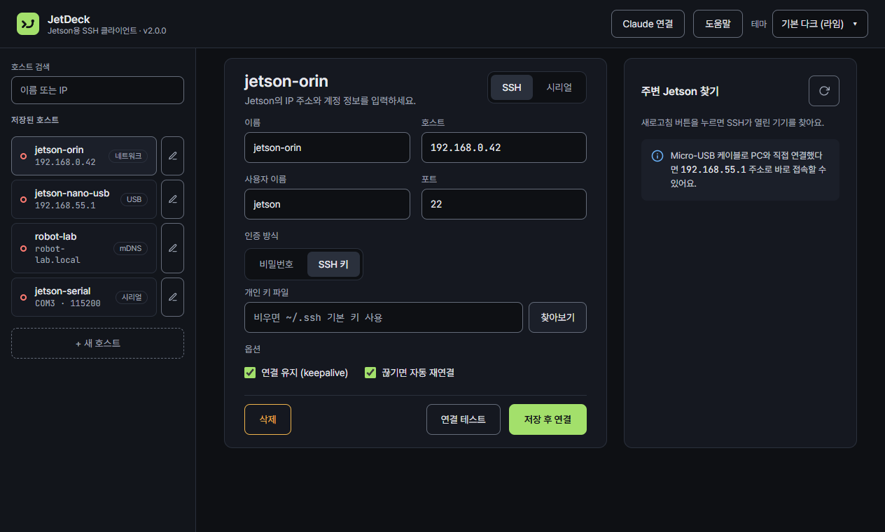
🔌 연결 관리
- 기기를 저장해 두고 클릭 한 번으로 접속
- 지금 켜져 있는 기기는 온라인 표시
- IP를 몰라도 주변 Device 찾기로 자동 검색
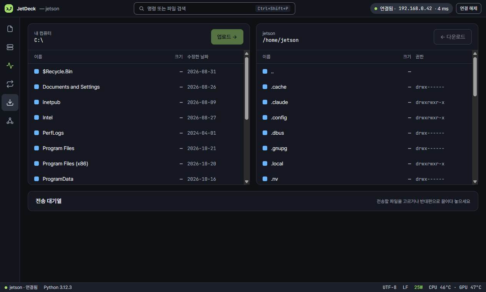
📁 파일 전송
- 내 PC ↔ 기기 양쪽 목록을 나란히
- 끌어다 놓으면 끝, 폴더도 통째로
- 진행률·속도 표시, 전송 대기열과 취소
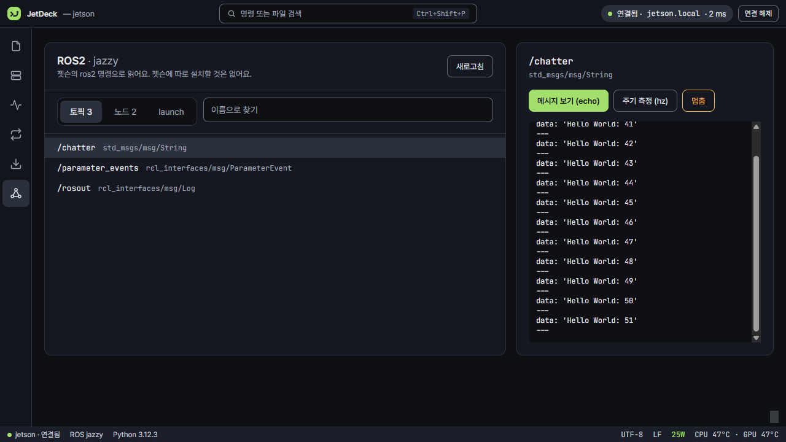
🤖 ROS2 도구
- 토픽·노드 목록에서 골라 echo·hz 실시간 확인
- launch 파일을 찾아 바로 실행
- 서비스 호출, 파라미터 설정, bag 재생·녹화
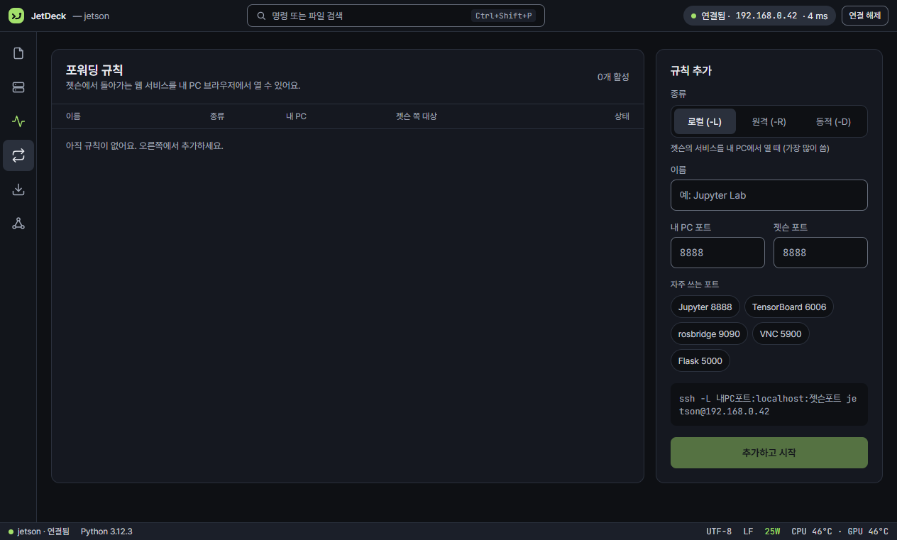
🔀 포트 포워딩
- Jupyter·TensorBoard는 프리셋으로 한 번에
- 접속하면 자동으로 시작
- 로컬·원격·동적(SOCKS5) 모두 지원
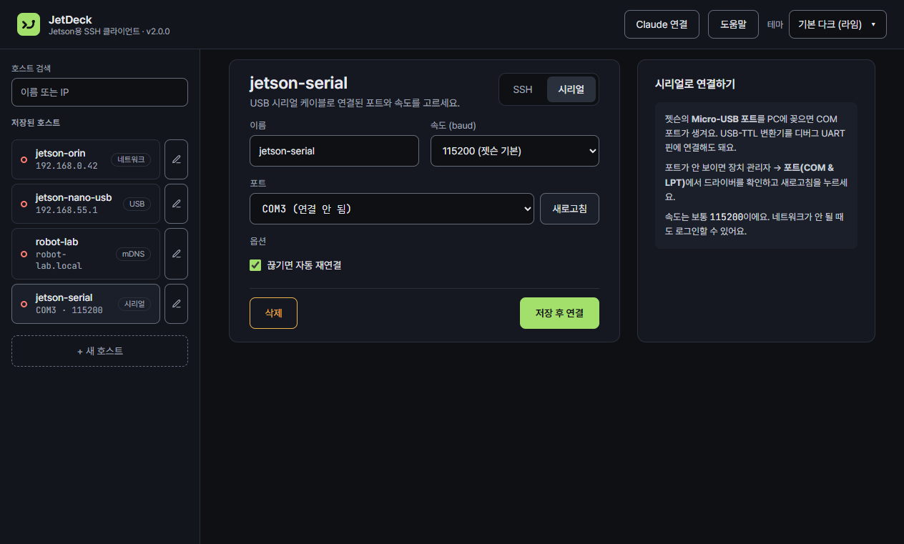
🔧 시리얼 콘솔
- SSH가 안 될 때의 비상구
- 포트와 속도만 고르면 끝 (젯슨 기본 115200)
- 케이블이 빠졌다 꽂혀도 자동 재연결
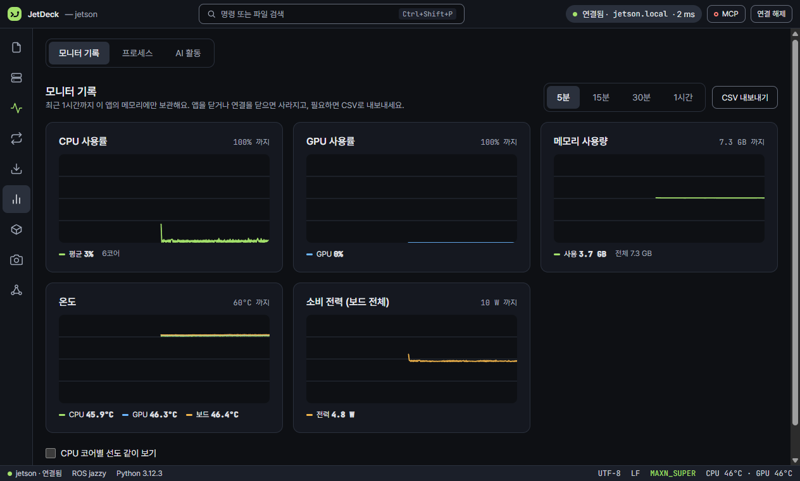
📈 모니터 기록
- CPU·GPU·메모리·온도·전력을 최근 1시간까지 그래프로
- 5분·15분·30분·1시간 범위 전환
- CSV로 내보내기
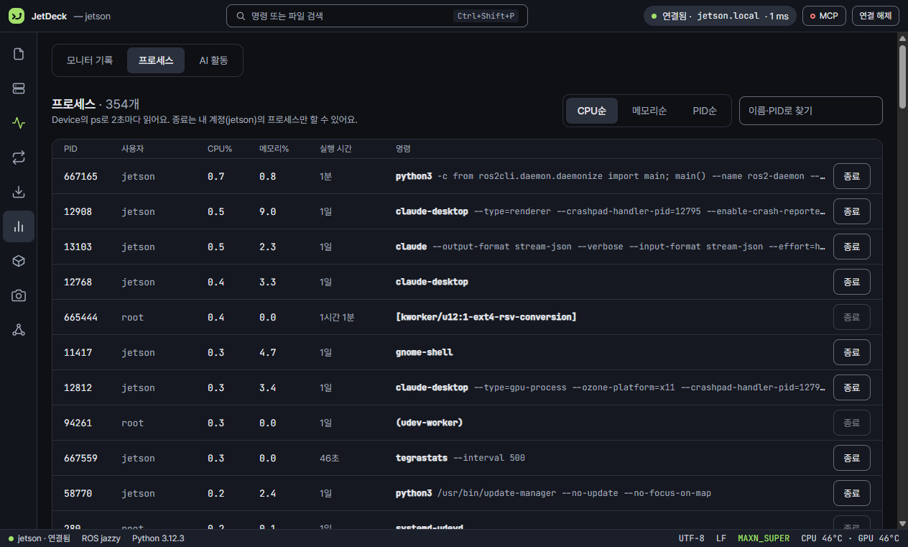
🧮 프로세스
- CPU·메모리·PID 순으로 정렬, 이름으로 검색
- 내 계정의 프로세스는 버튼으로 종료
- sshd·시스템 프로세스는 종료를 막거나 경고해요
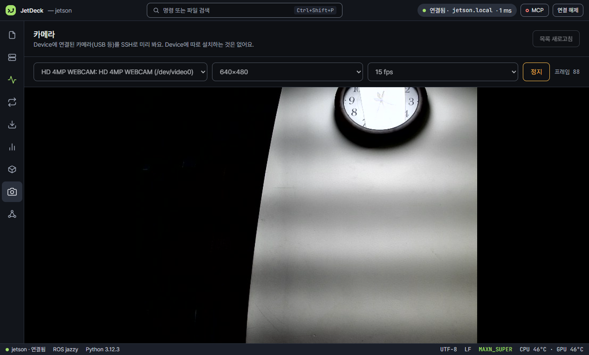
📷 영상 입력 미리보기
- 기기에 꽂은 USB 카메라 등 영상 입력을 앱 안에서 바로 확인
- 장치·해상도·fps를 고르고 시작
- 정지하면 기기 쪽 실행도 함께 종료
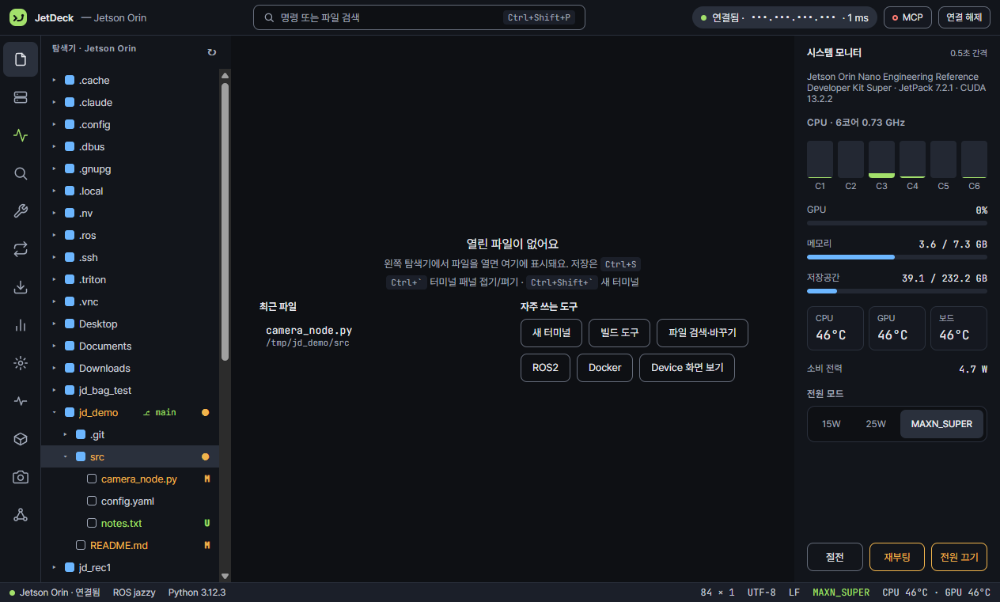
🌿 Git 상태 표시
- 탐색기에서 브랜치와 바뀐 파일을 한눈에 (M·U 표시)
- 바뀐 파일이 들어 있는 폴더에도 점 표시
- 기기에 git만 있으면 되고, 따로 설치할 것 없음
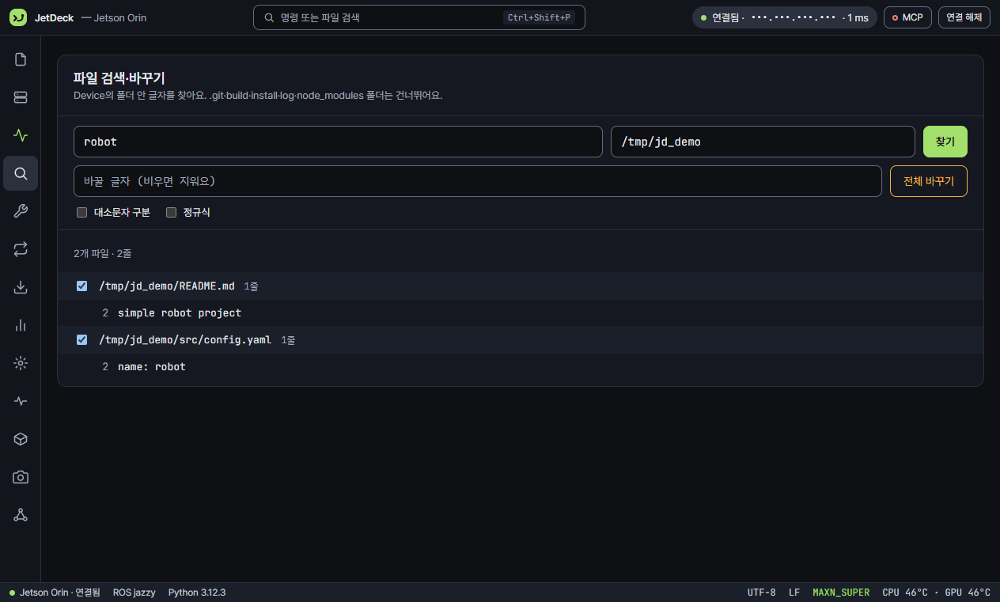
🔎 파일 검색·바꾸기
- 기기 폴더 안의 글자를 찾고, 결과를 누르면 그 줄로 이동
- 정규식·대소문자 구분, 체크한 파일만 전체 바꾸기
- 바꾸기 전에 확인 창, 읽은 뒤 파일이 바뀌었으면 건너뜀
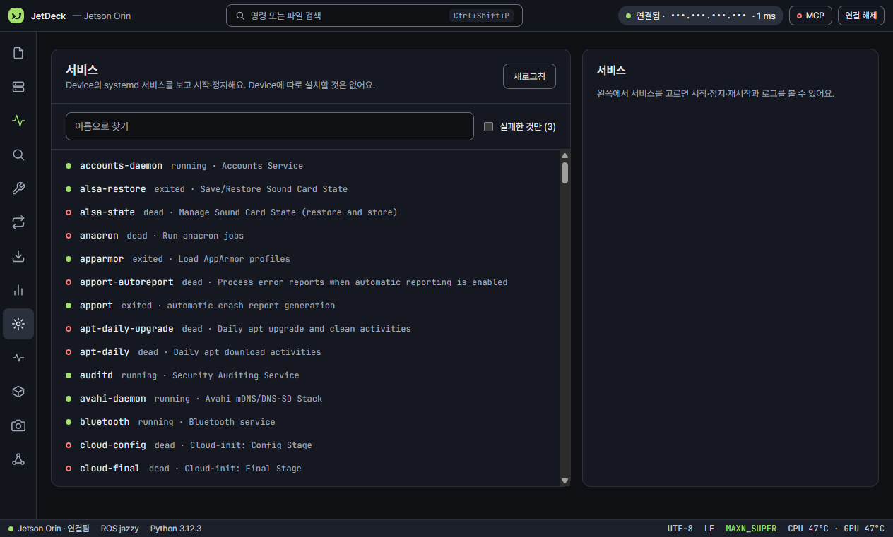
⚙️ 서비스
- systemd 서비스를 목록으로 보고 이름으로 검색
- 시작·정지·재시작, 로그 마지막 200줄과 실시간 로그
- 실패한 서비스만 모아 보기
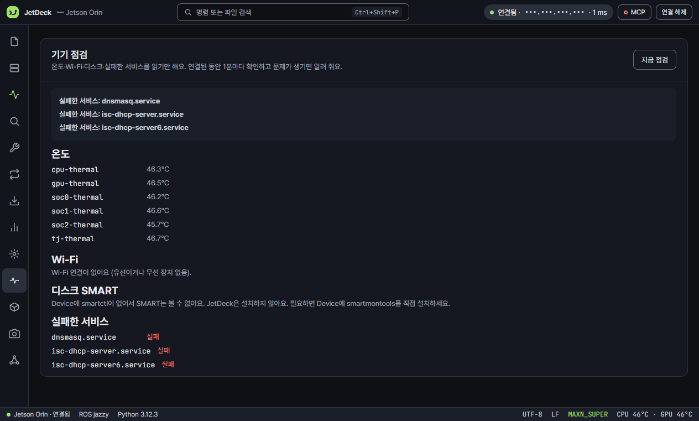
🩺 기기 점검
- 온도·Wi-Fi 신호·디스크 SMART·실패한 서비스를 읽기만 해서 보여줘요
- 연결된 동안 1분마다 확인하고 문제가 생기면 알림
- SMART는 기기에 smartmontools가 있을 때만
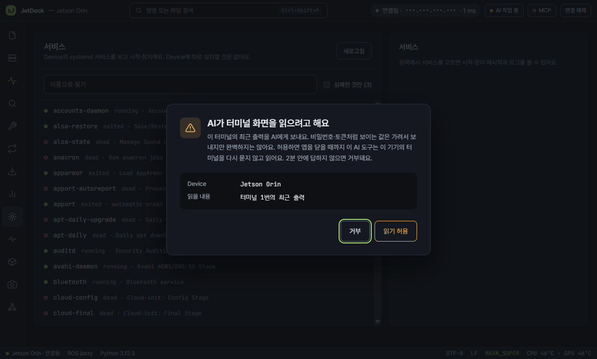
🛡️ AI 터미널 읽기 승인
- AI가 터미널 출력을 읽으려 하면 먼저 허용을 물어봐요
- 비밀번호·토큰처럼 보이는 값은 가려서 전달
- 터미널만 읽고, 허용은 앱을 닫을 때까지만 유지
필요한 건 다 들어 있어요
모든 기능은 Ctrl+Shift+P 명령 팔레트에서 바로 찾을 수 있어요.
💻 매일 쓰는 기본 터미널·편집·파일
터미널
여러 탭·분할·터미널만 크게. 끊기면 자동 재연결하고 탭은 그대로.
원격 편집
VS Code와 같은 Monaco 편집기. 기기에서 바뀐 파일은 덮어쓰기 전에 알려 줘요.
파일·폴더 전송
내 PC ↔ 기기 끌어다 놓기, 폴더 통째 올리기·내려받기, 동시 4개 전송.
분할 화면
연결을 최대 4개까지 한 화면에 나란히(좌우) 또는 바둑판으로.
빌드·검색·Git
colcon·catkin_make 실행과 오류 줄 → 파일 이동, 폴더 안 글자 찾기·바꾸기(Ctrl+Shift+F), 탐색기에 Git 상태 표시.
설정 내보내기·가져오기
호스트 목록·스니펫·테마를 파일 하나로. 비밀번호는 들어가지 않아요.
스니펫
자주 쓰는 명령은 저장해 두고 팔레트에서 바로 실행.
포트 포워딩
로컬·원격·동적(SOCKS5). Jupyter·TensorBoard 프리셋, 접속하면 자동 시작.
📊 상태 확인·관리 모니터·여러 기기
시스템 모니터
코어별 CPU·GPU·메모리·온도·전력, JetPack·CUDA 버전. 전원 모드 전환, 절전·재부팅, Wake-on-LAN. 라즈베리 파이 같은 일반 리눅스도 지원.
여러 기기 대시보드
저장한 기기마다 CPU·GPU·메모리·온도·전력 카드를 한 화면에. 누르면 그 기기로 이동.
기록·프로세스·AI 활동
최근 1시간 모니터 그래프와 CSV, 프로세스 종료, AI·다른 SSH 접속이 한 일 기록.
서비스 (systemd)
서비스 시작·정지·재시작, journalctl 로그 실시간. sudo 비밀번호는 새 터미널에서 직접 입력.
기기 점검
온도·Wi-Fi 신호·디스크 SMART·실패한 서비스. 문제가 생기면 알림.
Docker
컨테이너·이미지 목록, 시작·정지·재시작·삭제, 로그 보기.
SSH 키 마법사
이 PC의 키를 만들어 기기에 등록하고, 비밀번호 없이 접속하도록 한 번에.
🤖 로봇·하드웨어 ROS2·시리얼·카메라·화면
ROS2 도구
토픽·노드 목록과 info, echo·hz 실시간, launch 바로 실행. 서비스 호출, 파라미터 읽기·설정, bag 정보·재생·녹화.
시리얼 콘솔
SSH가 안 될 때의 비상구. 포트와 속도만 고르면 끝.
영상 입력 미리보기
기기의 USB 카메라 등 영상 장치를 장치·해상도·fps를 골라 앱 안에서 실시간으로.
기기 화면 보기
VNC 데스크톱을 앱 안에서 바로(SSH 터널). VNC·RDP 뷰어 열기, rviz·rqt 같은 X11 창은 PC의 X 서버로.
✨ AI·편의 MCP·테마·언어
MCP 연결
Claude·Cursor·Codex 등 AI가 기기에서 명령 실행·파일 편집. 연결되면 버튼에 불이 켜져요.
테마 17종
기본 다크·라이트부터 네온, 마스코트 테마까지. 다시 시작 없이 바로 바뀌어요.
영어 화면
위쪽 언어 버튼으로 한국어 ↔ English.
업데이트 내용
업데이트하면 바뀐 점을 앱에서 바로 보여 줘요. 도움말 옆 버튼으로 다시 볼 수도 있어요.
"보드 온도 확인해 줘"라고 말하세요
MCP를 지원하는 AI(Claude·Cursor·VS Code·Codex CLI·Gemini CLI 등)에게 말하면 JetDeck을 통해 기기에서 바로 실행해요.
- 연결 관리 화면 위쪽 MCP 연결 버튼을 눌러요. 연결된 AI가 있으면 버튼 옆에 초록 불이 켜져요.
- 위쪽 탭에서 쓰는 AI를 고르면 맞는 설정이 나와요. 복사해서 붙여 넣고(또는 명령을 한 번 실행하고) 그 프로그램을 다시 켜요.
- AI에게 평소처럼 말하면 끝. 그 밖의 MCP 프로그램은 실행 명령만 알려 줘요.
rm·sudo·reboot·kill·dd·apt·systemctl, >로 덮어쓰기 같은 명령은 JetDeck 화면에서 허용을 눌러야 실행돼요. JetDeck은 이 PC 안(127.0.0.1)에서 비밀 토큰을 가진 요청만 받아요.AI가 쓸 수 있는 도구 보기
| 도구 | 하는 일 |
|---|---|
list_hosts · connect | 저장된 기기 목록·연결 (JetDeck에 탭이 열림) |
run_command | 명령 실행 후 출력·종료 코드 |
read_file · write_file · list_dir | 파일 읽기·쓰기, 폴더 목록 |
get_status | CPU·GPU·메모리·온도·전력·전원 모드·ROS 버전 |
오래 보는 화면, 취향대로
연결 관리 화면 오른쪽 위 테마 메뉴에서 바로 바뀌어요. 모든 테마는 글자·터미널 색 대비 4.5:1 이상, 터미널과 편집기는 항상 불투명해요.
에센셜
매일 쓰는 기본 4종
컬러 무드
노을·숲·바다·종이·레트로 등 분위기 7종
네온 사인
그라데이션 배경과 유리 패널, 연결 중일 때만 창 테두리가 빛나요
마스코트
모모·볼트·두두가 연결 상태에 따라 표정을 바꾸고 한마디씩 해요
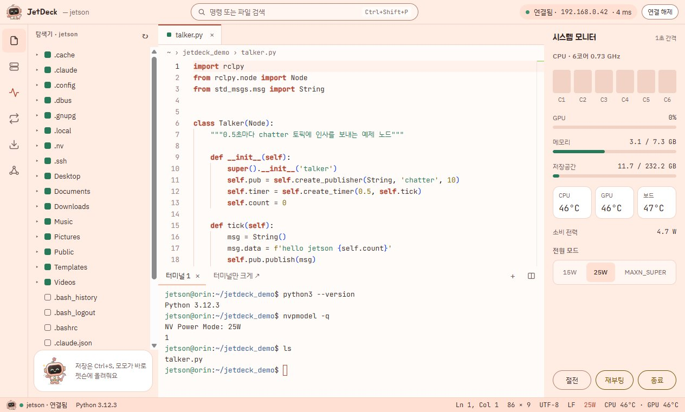
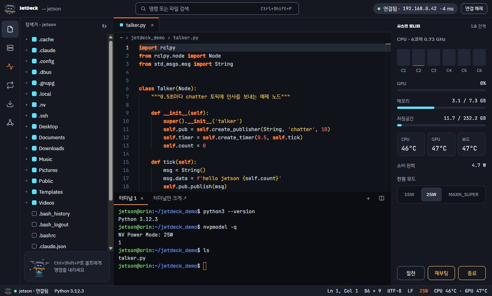
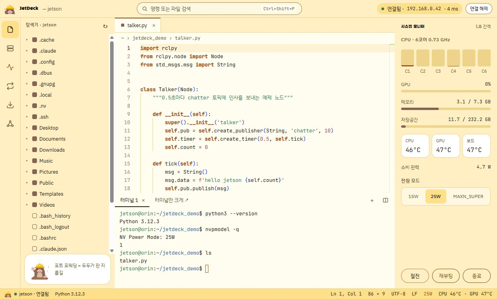
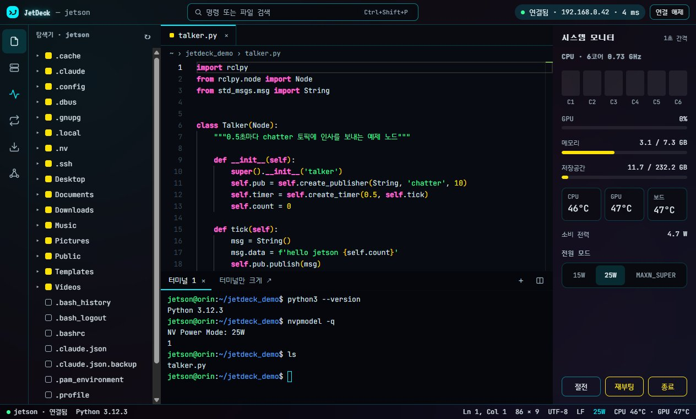
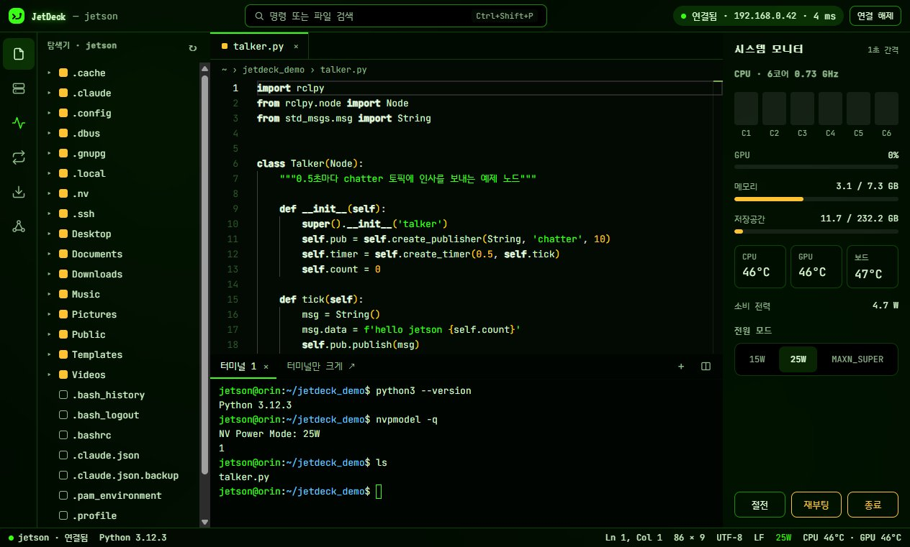
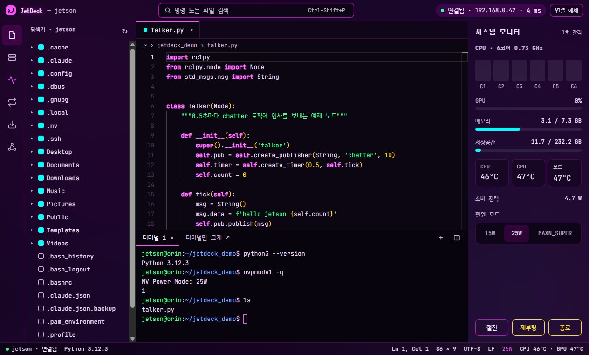
나머지 11종 보기 (에센셜 4 · 컬러 무드 7)
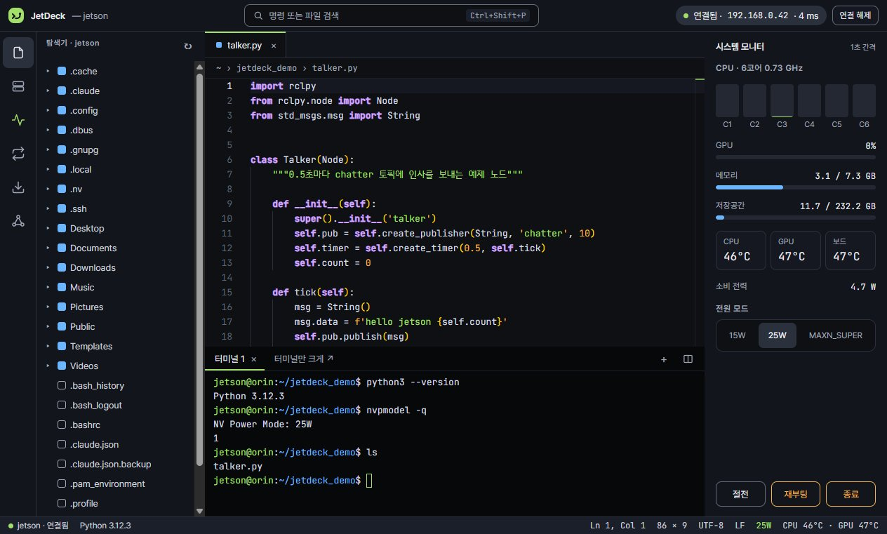
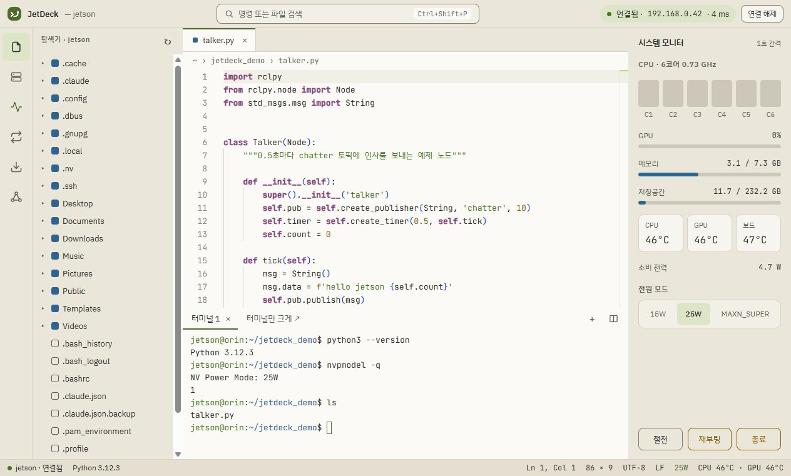
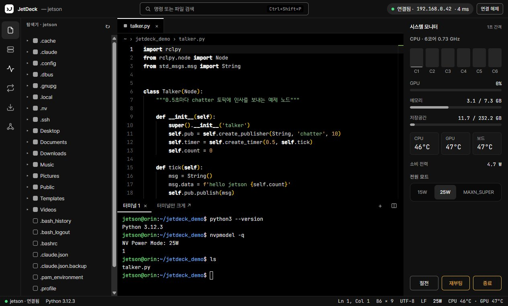
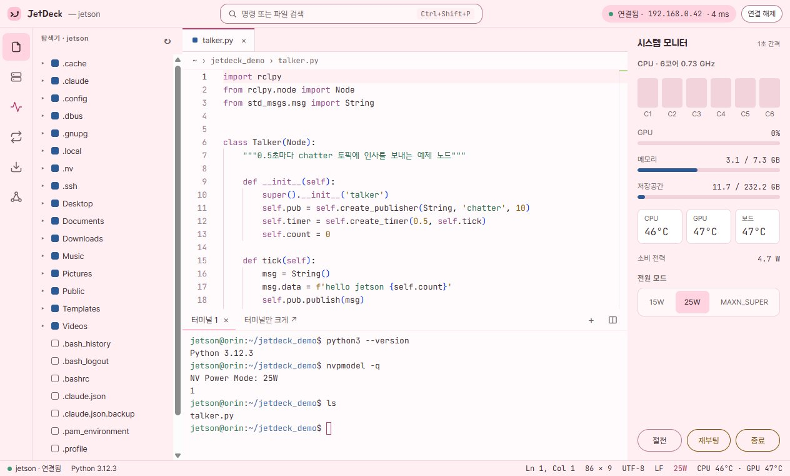
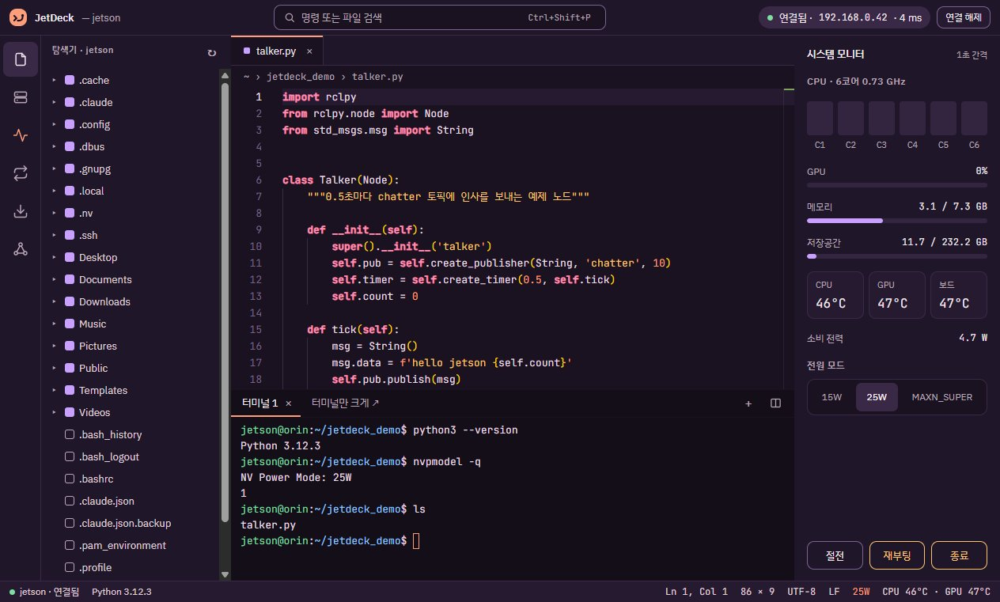
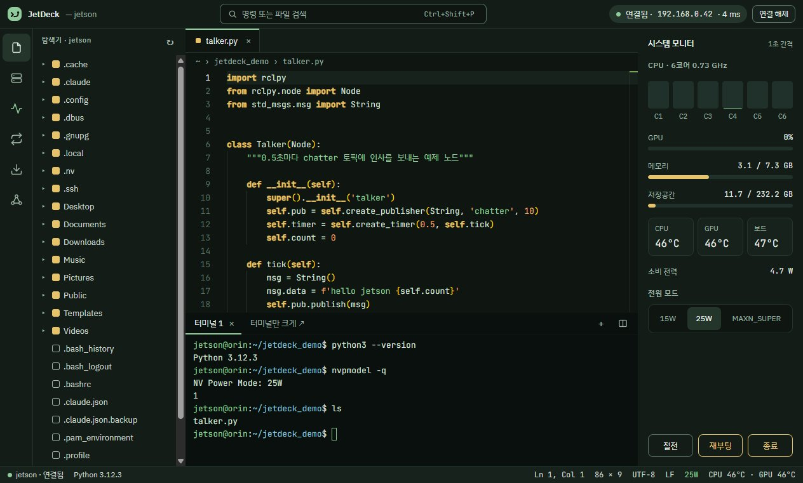
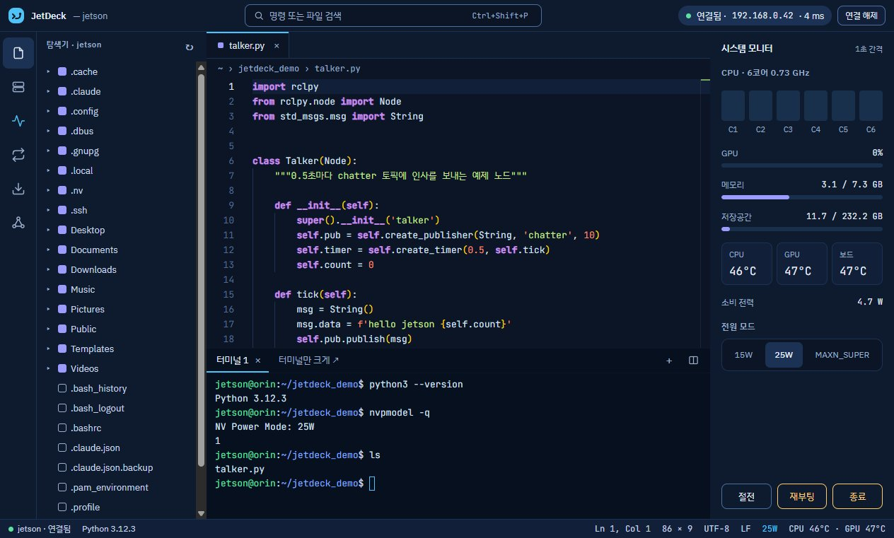
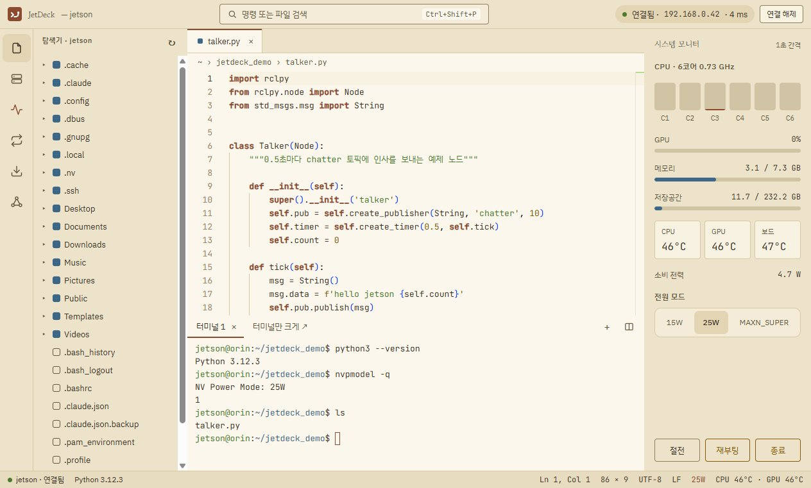
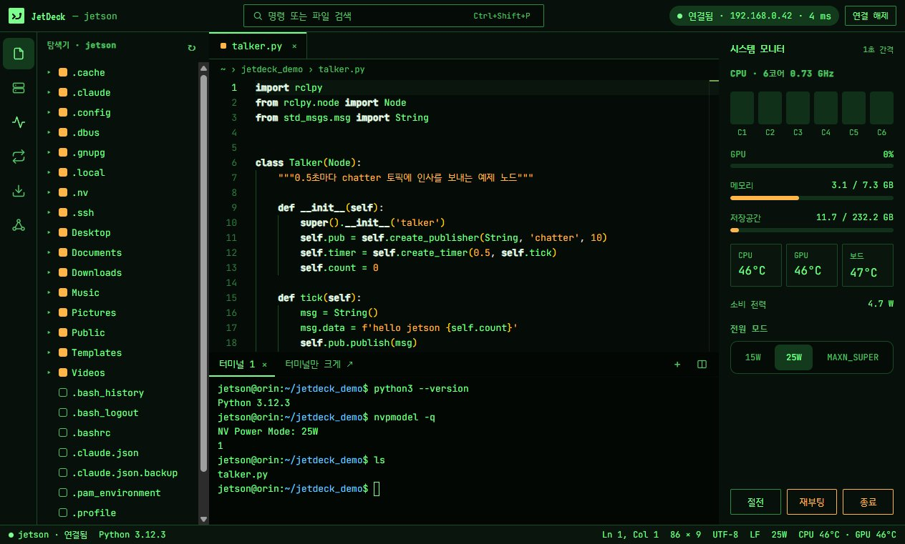
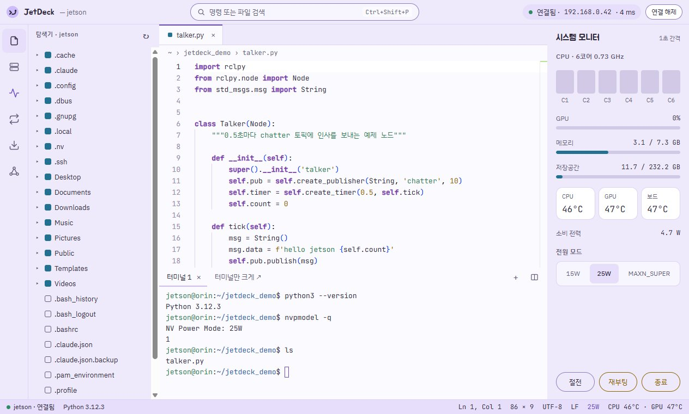
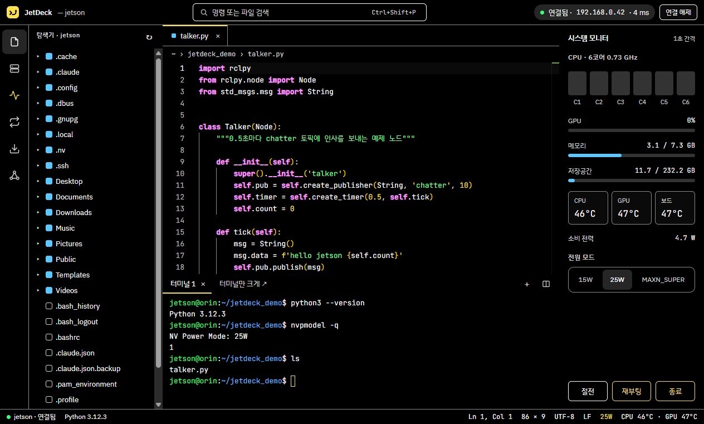
나만의 테마 만들기
테마 폴더에 JSON 파일을 넣고 앱을 다시 켜면 메뉴에 추가돼요. 같은 id면 기본 테마를 덮어써요.
- Windows:
%APPDATA%\nanoterm\themes\ - Linux:
~/.config/nanoterm/themes/
기본 테마와 같은 형식(id, label, kind, ui, status, terminal.theme, editor, font)을 따르면 돼요. 네온 효과(ui.backgroundCss, effects)와 마스코트(mascot)도 같은 방식으로 정의해요.
안심하고 쓰세요
비밀번호는 이 PC에만
OS 암호화로 저장해요 (Windows: DPAPI, Linux: 키링). 다른 PC로 복사해도 못 풀어요.
호스트 키 확인
처음 접속 때 확인하고, 바뀌면 경고해요. ~/.ssh/known_hosts도 함께 읽어요 (쓰지 않음).
밖으로 보내는 건 두 가지뿐
기기와의 SSH 연결과 업데이트 확인(GitHub Releases).
저장 위치: Windows %APPDATA%\nanoterm\, Linux ~/.config/nanoterm/
내 컴퓨터에 맞는 걸 받으세요
Device 쪽 준비물은 SSH 서버 하나뿐이에요 (JetPack 기본 상태 그대로 OK).
지원 기기 — NVIDIA Jetson은 전체 기능(tegrastats 모니터·전원 모드·JetPack·CUDA 버전), 라즈베리 파이·우분투 등 일반 리눅스는 터미널·편집·파일 전송·포트 포워딩·모니터(CPU·메모리·온도)를 쓸 수 있어요.
Linux (x64)
PC용 AppImage. 받아서 실행 권한만 주면 돼요.
chmod +x JetDeck-*-x86_64.AppImage && ./JetDeck-*-x86_64.AppImageAppImage 받기
Linux arm64 (젯슨 본체)
젯슨에서 직접 쓸 때만 받으세요. PC에서 젯슨에 접속한다면 PC용을 받으면 돼요.
chmod +x JetDeck-*-arm64.AppImage && ./JetDeck-*-arm64.AppImagearm64 받기
Linux에서 안 열릴 때
- FUSE 2 설치:
sudo apt install libfuse2(Ubuntu 24.04는libfuse2t64) - 비밀번호 저장에는 키링(GNOME Keyring 등)이 필요해요. 키링이 없으면 비밀번호를 저장하지 않으니 SSH 키를 쓰세요.
세 단계면 연결돼요
- 새 연결에 기기 IP·사용자 이름·비밀번호를 넣고 저장 후 연결
- USB 케이블로 직접 연결했다면
192.168.55.1 - IP를 모르면 오른쪽 주변 Device 찾기
- USB 케이블로 직접 연결했다면
- 처음 접속 때 뜨는 호스트 키 확인에서 지문을 보고 신뢰하고 연결
- 왼쪽에서 파일 열기 · 아래에서 명령 실행 · 오른쪽에서 상태 확인. 모든 기능은 Ctrl+Shift+P
기능별 사용법
🤖 ROS2 도구
왼쪽 활동 바의 ROS2 버튼. 기기의 ros2 명령을 SSH로 실행해 보여 줘요.
- 토픽 — 발행·구독 노드, 메시지 보기(echo), 주기 측정(hz). 멈추거나 화면을 닫으면 기기 쪽 명령도 끝나요.
- 노드 — 연결된 토픽·서비스
- launch — 내 워크스페이스와 설치된 패키지의 launch 파일을 찾아, 확인 후 새 터미널 탭에서
ros2 launch
ROS 환경은 기기 ~/.bashrc의 source /opt/ros/<배포판>/setup.bash를 따라요.
🔧 시리얼 콘솔
- 젯슨 USB(장치 모드)를 PC에 꽂거나, USB-TTL 어댑터를 디버그 UART에 연결
- 새 연결 → 시리얼에서 포트와 속도(젯슨 기본 115200) → 저장 후 연결
- 케이블이 빠졌다 다시 꽂히면 자동으로 다시 연결해요.
Linux에서 "접근 권한이 없어요"가 뜨면 sudo usermod -aG dialout $USER 후 다시 로그인.
🖥 기기 화면·X11·카메라·언어
- 기기 화면 보기 — 기기에 VNC 서버가 켜져 있어야 해요(없으면 앱이 켜는 방법을 안내). 연결 설정의 원격 화면 종류를 VNC로 두고 작업 공간의 원격 화면을 누르면 앱 안에서 열려요.
- X11 화면 — 연결 설정에서 "X11 화면"을 켜고 PC에서 X 서버(
winget install marha.VcXsrv, XLaunch에서 Disable access control)를 실행한 뒤 터미널에서rviz2등을 실행하면 PC 창으로 떠요. - 영상 입력 — 활동 버튼의 카메라에서 장치·해상도·fps를 고르고 시작. 기기에
v4l2-ctl·gst-launch-1.0이 있어야 해요. - 언어 — 위쪽 언어 버튼. 바꾸면 화면을 다시 불러와서 열린 연결이 닫혀요(바꾸기 전에 확인).
⌨️ 단축키
| Ctrl+Shift+P | 명령 팔레트 (모든 기능) |
| Ctrl+P | 파일 이름으로 열기 |
| Ctrl+S | 저장 |
| Ctrl+` | 터미널 패널 접기/펴기 |
| Ctrl+Shift+` | 새 터미널 |
| Ctrl+C / V (터미널) | 선택이 있으면 복사, 없으면 중단(^C) / 붙여넣기 |
| Esc | ROS2·파일 전송·포워딩 화면 닫기 |
잘 안 될 때
증상별 확인할 것
| 증상 | 확인할 것 |
|---|---|
| "응답이 없어요" | 기기 전원·네트워크, 같은 공유기인지, IP가 바뀌지 않았는지 |
| "인증 실패" | 사용자 이름·비밀번호. 키 인증이면 키 파일 경로 |
| "비밀번호 로그인을 막아 두었어요" | 그 기기는 SSH 키로만 접속돼요. ① 등록된 키가 있으면 인증 방식을 "SSH 키"로 ② 없으면 ssh-keygen -t ed25519로 만든 뒤 id_ed25519.pub를 젯슨 ~/.ssh/authorized_keys에 추가 ③ 본인 젯슨이면 /etc/ssh/sshd_config.d/의 PasswordAuthentication no를 yes로 바꾸고 sudo systemctl restart ssh |
| 암호 걸린 SSH 키 | ssh-add로 ssh-agent에 등록한 뒤 연결 |
| ROS2 목록이 비어 있음 | 노드가 실행 중인지, ~/.bashrc에 ROS setup.bash를 source하는 줄이 있는지 |
| 시리얼 "다른 프로그램이 쓰고 있어요" | PuTTY·Arduino IDE가 같은 포트를 열고 있는지 |
| 시리얼 글자가 깨짐 | 속도(baud). 젯슨 디버그 콘솔은 115200 |
| 시스템 모니터가 비어 있음 | Linux가 아니거나 /proc·/sys를 읽을 수 없는 기기 (젯슨이 아니어도 일반 리눅스는 표시돼요) |
| 파일이 편집기로 안 열림 | 5MB 초과, 바이너리, UTF-8이 아닌 파일은 열지 않아요 (원본 보호) |
그래도 안 되면 Issues에 증상과 앱 버전(연결 관리 화면 왼쪽 위 vX.Y.Z)을 적어 주세요.
예전 버전 받기
예전 버전이 필요할 때 받으세요. 최신 버전을 권장해요.
- 목록을 불러오는 중…
로드맵
| 버전 | 계획 |
|---|---|
| 4.0 (출시) | 폴더 전송·스니펫 · ROS2 서비스·파라미터·bag · VNC·RDP · Docker · 모니터 기록·프로세스·AI 활동 · 기기 화면 · 대시보드 · 영상 입력 미리보기 · X11 · 영어 화면 |
| 4.0.x | 설치판에서 나온 불편 수정 · 새 기능 화면 사진 보강 · 영어 화면 다듬기 |
| 4.1 · 4.2 · 4.3 (출시) | 시작 화면 · 빌드 도구(colcon·catkin_make, 오류 줄 → 파일 이동) · 원격 파일 검색·전체 바꾸기 · Git 상태 / systemd 서비스 시작·정지·journalctl 실시간 · 기기 점검(온도·Wi-Fi·SMART·실패한 서비스 알림) / 설정 내보내기·가져오기 · AI가 터미널 읽기(승인·비밀 가리기) |
| 순서는 바뀔 수 있어요. 바라는 기능은 Issues에 남겨 주세요. | |
기기에는 아무것도 설치하지 않고 SSH로만 동작해요.
Electron 45 · React 19 · TypeScript · ssh2(SSH·SFTP·포워딩) · xterm.js(터미널) · Monaco Editor(편집기) · serialport(시리얼) · noVNC(기기 화면) · electron-updater(자동 업데이트). 빌드는 electron-vite + electron-builder(Windows NSIS·포터블, Linux AppImage).
noVNC는 MPL-2.0 라이선스로 제공돼요.
젯슨 작업, 오늘부터 한 창에서
개인·교육 목적이라면 무료예요.